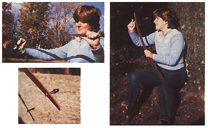
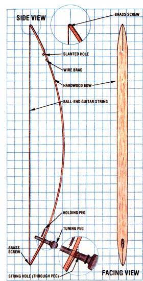

Musical instruments have been around for a long, long time, and the mouth bow is probably one of the oldest of them. In fact, an ancient French cave drawing, made perhaps 15,000 years ago, shows an individual dancing toward several buffalo while playing one of the stringed resonators. Early humans may have believed there were magical powers in this simple soundmaker, or may have discovered that wild animals were intrigued by the humming, twanging noises it could produce. Regardless, later musicians have continued to find the mouth bow to be a charming instrument . . . one that's both easy to play and to construct.
The most traditional sort of mouth bow is similar to its counterpart, the simple hunting bow . . . being little more than a springy bough with a length of twine, leather, or gut strung between the two ends. The socalled Appalachian mouth bow is a variation on this style, having a flat strip of wood, tapered on each end, rather than the rounded branch. Its design is clean and uncomplicated, and lends itself to artistic woodworking or painting if-by chancethe maker feels so inclined.
When assembling most mountain or folk instruments, there's no "correct" way to do things, and making a mouth bow is no exception to this rule. Feel free to use your own creativity to alter any details of the bow you build. The particular design shown here calls for a strip of hardwood, Which I had cut to measure about 3/16" X 1-1/4" X 32" . . . a guitar string (a heavy-gauge steel second or third B or G string works well), preferably one with a ball end . . . a wooden violin tuning peg . . . two No. 2 roundhead brass screws, each 1/2" or 3/8" long . . . and, if your guitar string has a "loop" end rather than a ball, an 18-gauge wire brad.
For tools, you'll need a jigsaw . . . a drill with assorted bits (1/16" to 1/2" or so) . . . a small screwdriver . . . a hammer (if you use the brad) . . . a power sander (this is optional) . . . sandpaper in various grades . . . and-if you want to add a finish to your creation-some tung oil or boiled linseed oil, fine steel wool, and several clean rags.
The most difficult task involved in making the mouth bow is likely to be simply finding the right sort of resilient wood (walnut, maple, cherry, ash, or white oak are all popular, and provide a nice range of colors). The variety you do get will depend, of course, on what's available from lumber suppliers, local sawmills, friends, or even your own scrap pile. Most lumberyards deal primarily in evergreen wood (fir, pine, cedar), but others do carry at least a few suitable hardwoods, such as white oak. Then again, you might find that a local cabinetmaker will have some odd lengths of woo to give away or sell. There are also companies that specialize in unusual and exotic woods (see the Editor's Note at the end of this article) . . . and-although these products may be quite expensive-such outfits can provide you with clear, straight-grained pieces having the strength and flexibility you'll need for your project. You should know, too, that the necessary "cutting to size" will be difficult, even with the best hand equipment, so if you don't have access to a relatively complete woodworking shop, it might be worth your while to have the wood you select milled to size at a local sawmill or lumberyard.
If you do have suitable tools and wish to cut the slat yourself, you'll need to get a piece of stock that's at least 2" X 2" X 36" (this will produce strips for more than one bow). Allowing for the loss of some wood in sanding, slice off a strip a little more than 3/16" thick, then trim it to slightly more than 1-1/4" in width and 32" in length.
Once the slat has been cut, you'll need to form a gentle point at each end, starting the taper about 6 inches from the tip. You can do this by sawing or by sanding, whichever is easier, and the curve produced can be gradual or sharp. Do, however, try to make both ends symmetrical.
Now, smooth the slat. You can use a mechanical sander to take down any really rough spots . . . but be careful to move the tool lightly and evenly over the wood so you don't scrape it down too far. Further hand sanding with fine sandpaper-and perhaps even with fine steel wool toward the last-will make the slat as smooth as glass.
When the split is ready, drill a hole into each tip to accommodate a brass screw (a 5/64" hole will- suit a No. 2 screw). Twist the two pieces of hardware into place, making sure that the slots in the heads are positioned so that the string can run end-to-end through them.
If you're planning to use a ball-end string, drill a 1/16" hole about 1-1/2 inches from one end of the slat, centered and slanting upward toward the tip (see the diagram). If the string that you've chosen has a loop end, nail the brad in at an angle 1 inch below the new hole.
The loop will hook over the brad, and the string can then be threaded through the hole. Now, on the opposite end of the slat, drill a 5/16" hole-or one of whatever size is needed to accommodate your violin tuning peg-straight through the slat, at a point about 3-1/4 inches from the tip. The tuning peg is tapered and should fit snugly in the hole, with an available portion from 1/2" to 3/4 "between the fingerhold and the slat-upon which the string will be wrapped. [EDITOR'S NOTE: We found our test model much easier to put together after we drilled a 1/16" hole through the tuning peg, close to t he point at which it entered the slat. The end of the guitar string was threaded through this hole and bent, and the string was then wrapped around the peg as usual.]
At this point you should be able to assemble your bow and try it out to see if it'll hold together. First, thread the string through the slanted hole and wrap the far end around the tuning peg. Then run the string around both tip ends and through the screw slots. Now, flex the slat into a bow-one that's perhaps 4"-5" deep at its midpointby standing the tip on a stable surface and applying a little pressure . . . take up slack in the guitar string by wrapping more of it around the tuning peg . . . and thrust the peg firmly into its hole. Finally, hold the bow well away from your face and pluck the string with your finger or a pick. If everything holds together, you're ready to finish the job.
Of course, you may decide to leave your instrument as is, but if you want to stain or oil the wood, you'll need to dismantle the bow first. (Incidentally, don't use a heavy finish such as varnish, as it would interfere with the resonance of the wood.) Leave the screws in place-and the brad, too, if you used one-but do take off the string and tuning peg while you apply the finish. When it's well rubbed in and thoroughly dry, reassemble the instrument, set the tension, and get ready to play.
Playing the bow is just a matter of using your mouth as a sounding box while the slat lies against your cheek (see the photographs to learn the correct way to hold the instrument). Grasp the center of the bow with one hand, and pluck the string with the other. Then open and shut your mouth, and stretch and alter its shape to change the resonating sounds. It's a lot like humming . . . and, with a little practice, you should soon be able to play Jimmy Driftwood and Johannes Brahms with equal ease.
The mouth bow is an ancient instrument, and maybe that's why its sound seems so refreshing and comforting in this modern world. Just gather with your friends for an evening of music, and you'll see!
EDITOR'S NOTE: Those readers who are unable to find suitable hardwood for this project might want to contact Educational Lumber, Dept. TMEN, P.O. Box 5373, Asheville, North Carolina 28813 for material. This firm has a variety of fine hardwoods, and will send a free catalog upon request. The company will also mill wood to the approximate dimensions, needed for this project . . . but be warned: A°=. 1/4" X 2" X 36" hardwood slat will cost anywhere from $8 to $12, depending on the type of wood and shipping fees. Direct your inquiriesto the attention of Mr. Carr.
|
 CLOCKWISE FROM LEFT: Here we see the tuning peg, holding peg (optional), screw, and string.... If the center of your slat can be flexed 2 inches off the straight, it's sufficiently resilient.... Set the tension... lay the bow against the hollow of your cheek, and make music! |
|
 |